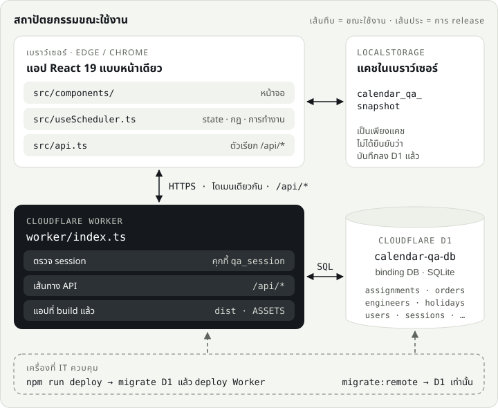

คู่มือนักพัฒนา
อธิบายว่า UTAC QA Calendar (QMS-CASS) สร้างอย่างไร รันในเครื่องอย่างไร และแก้ไขอย่างไรโดยไม่ทำให้การเชื่อมต่อระหว่างหน้าจอ กฎธุรกิจ API และฐานข้อมูลเสียหาย เรื่องการดูแลระบบจริง (เจ้าของระบบ การ release การกู้คืน และการทบทวนความปลอดภัย) อยู่ใน คู่มือส่งมอบ IT
สารบัญ
- 1สถาปัตยกรรม
- 2รันในเครื่องติดตั้ง · เฉพาะ frontend · Worker พร้อม local D1 · คำสั่ง
- 3แอปเริ่มทำงานอย่างไร
- 4โครงสร้างข้อมูลตารางใน D1 · นัดหมายหลายวัน
- 5API
- 6กฎธุรกิจ
- 7การแก้ไขระบบแก้หน้าจอ · เพิ่มฟิลด์ในนัดหมาย · เพิ่ม API route · เปลี่ยนสีหรือกฎสถานะ · เปลี่ยนกฎวันหยุด · เปลี่ยนการส่งออกไฟล์ · เพิ่มไซต์
- 8ตรวจงานก่อนส่ง
- 9Migration และ release
- 10แก้ปัญหาที่พบบ่อย
- 11ข้อควรระวังด้านความปลอดภัย
- 12แผนที่อ่านโค้ด
1สถาปัตยกรรม
แอปเป็น single-page app ด้วย React 19 และ TypeScript ที่ build ด้วย Vite มี Cloudflare Worker ตัวเดียวทำหน้าที่ให้บริการไฟล์ที่ build แล้วและ API /api/* ข้อมูลที่ใช้ร่วมกันเก็บใน Cloudflare D1 (SQLite)

| ส่วน | ตำแหน่ง | หน้าที่ |
|---|---|---|
| หน้าจอ | src/components/ | แสดงผลและเรียก callback จาก view model |
| ศูนย์กลาง state | src/useScheduler.ts | state, navigation, filter, validation, สร้าง/แก้/ลบ และ view model (VM) |
| กฎธุรกิจ | src/types.ts, src/holidays.ts, src/utils/ | types, normalization, ฟิลด์บังคับ, สถานะ, กฎวัน, metrics, ตัวเลือก dropdown |
| API client | src/api.ts, src/utils/authClient.ts | เรียก /api/* แบบ same-origin, sign-in และ session |
| Worker | worker/index.ts | ตรวจ session, routing API, SQL กับ D1, fallback ไปยังไฟล์ static |
| Schema | migrations/*.sql และ ensure*() ใน worker/index.ts | migration ของ D1 ตามลำดับ และ Worker ยังแก้ schema บางส่วนตอน runtime ด้วย (ดู 4.1) |
| Config | wrangler.toml | ชื่อ Worker, asset binding dist, D1 binding |
2รันในเครื่อง
2.1ติดตั้ง
ใช้ Node.js 22.12 ขึ้นไป (Wrangler ต้องใช้ 22+ ส่วน Vite และ oxlint ต้องใช้ 22.12+) แล้วรันจาก root ของ repository:
npm ci2.2เฉพาะ frontend
npm run devVite ที่ http://localhost:5173 เหมาะกับงาน layout และ component โหมดนี้ไม่มี Worker, D1 หรือ proxy สำหรับ /api:
- การ sign-in จะใช้บัญชีที่เก็บในเบราว์เซอร์แทน (เฉพาะ development build) ให้สร้างบัญชีผ่าน Sign up
- ข้อมูลมาจาก
calendar_qa_snapshotในlocalStorage(cache เดียวกับที่ production ใช้) ปฏิทินจึงเริ่มต้นแบบว่าง - จะเห็น banner "Could not load the shared calendar" ตอนโหลด และ banner บันทึกไม่สำเร็จทุกครั้งที่แก้ไข เพราะไม่มีการให้บริการ
/api/*
2.3Worker พร้อม local D1
apply migration กับฐานข้อมูลในเครื่องก่อนเริ่ม Worker (ดูข้อ 9 ขั้นตอนที่ 3):
npm run migrate:localหากต้องทดสอบการสมัคร ให้สร้างไฟล์
.dev.varsที่ root ของ repository (ไฟล์นี้ไม่ถูก track ใน git):REGISTRATION_CODE=any-local-test-valuebuild และเริ่ม Worker:
npm run dev:workerWrangler จะแสดง URL ในเครื่อง
2.4คำสั่ง
| คำสั่ง | ทำอะไร |
|---|---|
npm run dev | Vite dev server เฉพาะ frontend |
npm run dev:worker | build แล้ว wrangler dev กับ local D1 |
npm run build | ตรวจ type (tsc -b) และ bundle ด้วย Vite |
npm run lint | oxlint |
npm test | regression test การแยกประเภท Customer / Internal Audit และเกณฑ์ว่าการตรวจใดนับว่ามีผลตรวจแล้ว |
npm run preview | ดูตัวอย่าง production build |
npm run migrate:local | apply migration กับ local D1 |
npm run migrate:remote | apply migration กับ D1 ใน wrangler.toml (production) |
npm run deploy | release (scripts/deploy.mjs): build แสดงรายการ D1 migration ที่ค้างอยู่และขอให้ยืนยัน แสดงจุดกู้คืน (restore point) ของ Time Travel แล้ว apply migration เหล่านั้น จากนั้น wrangler deploy หากปฏิเสธหรือ migration ล้มเหลว จะหยุดก่อน deploy โค้ด ใช้ -- --local เพื่อซ้อมกับ local D1 โดยไม่ deploy |
npm run docs | สร้างเอกสาร HTML ใหม่ (รวมถึง search index) จากไฟล์ Markdown เหล่านี้ |
npm run docs:screenshots | ถ่ายภาพหน้าจอสำหรับเอกสารใหม่จากแอปที่รันอยู่ |
3แอปเริ่มทำงานอย่างไร
src/main.tsxmount<App />แล้วsrc/App.tsxเรียกuseScheduler()และแสดง Login หรือแอปinitialState()ในsrc/data.tsโหลดค่าเริ่มต้น browser snapshot (calendar_qa_snapshot) บันทึกที่เก็บไว้ (calendar_qa_comments) และผู้ใช้ที่จำไว้ (calendar_qa_session_user) หากมีผู้ใช้ที่จำไว้ แอปจะเปิดขึ้นในสถานะ sign-in แล้ว เดือนและปีมาจากgetCurrentCalendarDefaults(new Date())useScheduler()ตรวจ session ฝั่งเซิร์ฟเวอร์ด้วยauthClient.getSession()(GET /api/auth/sessionตรวจ HttpOnly cookie กับ D1) หาก session หมดแล้ว (401) แอปยังคงใช้ตัวตนที่จำไว้และ snapshot ใน cache และไม่โหลดข้อมูลจากเซิร์ฟเวอร์ หลังจากนั้นการบันทึกทุกครั้งจะล้มเหลวจนกว่าผู้ใช้จะ sign out แล้ว sign in ใหม่- เมื่อ session ใช้ได้ จะเรียก
api.fetchState()(GET /api/state) หนึ่งครั้ง Worker อ่าน engineers, plants, active plants, orders, assignments, comments, แถวactivity50 แถวล่าสุด, options, holidays และรายการ History 200 รายการล่าสุดพร้อมกัน ไม่มีการ polling การเปลี่ยนแปลงของผู้ใช้อื่นจะเห็นหลัง reload - client normalize ข้อมูล (
normalizeAssignment,normalizeSiteฯลฯ) และอัปเดต snapshot จากจุดนี้ D1 เป็นแหล่งข้อมูลหลัก snapshot เป็นเพียง cache หน้า History แสดงรายการจากเซิร์ฟเวอร์ รวมถึงรายการที่เบราว์เซอร์นี้บันทึกไม่สำเร็จ (มีป้าย "This browser only") และเก็บใน cache เฉพาะรายการที่ยังบันทึกไม่สำเร็จเหล่านั้น
หากหน้าจอว่าง ให้ตรวจว่าอยู่ในโหมดใด (Vite อย่างเดียว หรือ Worker + D1) เข้าสู่ระบบแล้วหรือยัง และดูใน DevTools ว่า /api/auth/session และ /api/state ตอบอะไร
4โครงสร้างข้อมูล
4.1ตารางใน D1
| ตาราง | คีย์ | เก็บอะไร |
|---|---|---|
assignments | id | หนึ่งแถวต่อหนึ่งวันของนัดหมายที่จองได้: audit_type (customer, internal หรือ '' = ไม่ทราบ ถือเป็น CS) ไซต์ ลูกค้า purpose ฟิลด์การตรวจ ผลตรวจ (แยกตามไซต์; recorded: true ระบุว่าผลตรวจถูกบันทึกแล้ว ดังนั้นแม้จำนวนเป็น 0 ทั้งหมดก็ยังนับว่ามีผลตรวจ) timestamps มี foreign key ไปที่ engineers.id (eng) และ orders.id (order_id) |
orders | id | หนึ่งแถวต่อหนึ่งนัดหมาย ทุกวันของนัดหมายใช้แถวเดียวกัน จึงเป็นตัวเชื่อมชุดนัดหมาย product เก็บ end customer (CS) หรือ area (IA); plant เก็บไซต์ (CS) หรือ standard (IA) |
engineers | id | QMS Host: ชื่อ บทบาท แผนก แผนกย่อย รวมถึง site และ host_department ระบบสร้างแถวให้อัตโนมัติเมื่อพิมพ์ชื่อ host ใหม่ในฟอร์ม |
comments | id | บันทึกของวัน เชื่อม assignments ด้วย assignment_id ไม่ได้บันทึกผู้เขียนและเวลา (แสดงเป็น "You", "just now" เสมอ) |
plants / active_plants | id / plant_id | ข้อมูล plant แบบเก่าของ QMS / EHS / ESD และ flag สถานะเปิดใช้ ไม่มีหน้าจอใดใช้ |
options | (category, value) | ค่าของ dropdown ไซต์คือแถว site_code ที่เก็บสีไว้ใน meta ลำดับที่กำหนดเองเก็บเป็น JSON ในแถว _order_<category> |
custom_holidays | date | กฎวันหยุด shutdown no-customer-audit และ working-day พร้อมไซต์ที่ล็อก |
activity | id | activity feed แบบเก่า (แสดงในหน้า Profile) และแถว audit ของการเปลี่ยนวันหยุด โดยระบุบัญชีที่ sign-in อยู่ หน้า History ไม่ได้ใช้ตารางนี้ |
history_log | id | History ที่ใช้ร่วมกัน (migration 0021): หนึ่งแถวต่อหนึ่งการเปลี่ยนแปลง โดย Worker กำหนดผู้ใช้และเวลาจาก session ส่วน action, entity, คำอธิบาย และ metadata มาจากเบราว์เซอร์ |
users | id | ชื่อผู้ใช้ hash และ salt ของรหัสผ่าน ชื่อที่แสดง บทบาท |
sessions | token_hash | session ฝั่งเซิร์ฟเวอร์ (เชื่อม users เชิงตรรกะ ไม่มี foreign key) แถวที่หมดอายุแล้วไม่ถูกลบทิ้ง |
อ่าน migration ตามลำดับเลขตั้งแต่ 0001_init.sql ห้ามแก้ migration ที่อาจ apply ไปแล้ว ให้เพิ่มไฟล์หมายเลขถัดไป
Worker ยังแก้ schema ตอน runtime ด้วย: ใน request แรกของ Worker instance แต่ละตัว ensureAssignmentColumns(), ensureUsersTable(), ensureSessionsTable() และ ensureCustomHolidaysTable() จะเพิ่มคอลัมน์และตารางที่ยังไม่มี assignments.department, engineers.site และ engineers.host_department มีอยู่เฉพาะผ่านฟังก์ชันเหล่านี้ นอกจากนี้ ensureSessionsTable() ยังลบผู้ใช้ demo เก่า และเลื่อนบัญชีที่เก่าที่สุดขึ้นเป็น admin เมื่อยังไม่มี admin ทุกครั้งที่ cold start
4.2นัดหมายหลายวัน
นัดหมายที่ครอบคลุมหลายวันคือหลายแถวใน assignments หนึ่งแถวต่อหนึ่งวันธรรมดาที่จองได้ (ข้ามวันหยุดสุดสัปดาห์และวันหยุดนักขัตฤกษ์ตอนสร้างแถว) แถวเหล่านี้เชื่อมกันด้วย order_id ที่ใช้ร่วมกัน (และ eng) client ยังกำหนด seriesId / groupId ด้วย แต่ค่าเหล่านี้ไม่ได้ถูกบันทึก หลัง reload จึงหาชุดนัดหมายจาก order + eng การแก้หรือลบทุกครั้งต้องรองรับทั้ง "เฉพาะวันนี้" และ "ทั้งชุด" ผลตรวจเก็บแยกตามไซต์ใน results และ normalize ด้วย normalizeAuditResults() โดยใช้ร่วมกันทั้งชุด
5API
ทุก route อยู่ใต้ /api/ แบบ same-origin Worker ตอบ request ข้าม origin (ตรวจ Origin หรือ Sec-Fetch-Site) ด้วย 403 "Cross-origin request denied." ทุก route ต้องมี session ที่ใช้ได้ ยกเว้น auth/session (ตอบ 401 เอง), auth/logout, auth/login, auth/register และ auth/reset-password ส่วน alias auth/signin, auth/signup และ auth/reset ทำงานเหมือนกัน
| Route | Methods | หน้าที่ |
|---|---|---|
auth/session | GET | session ปัจจุบัน |
auth/login | POST | เข้าสู่ระบบ |
auth/register | POST | สมัคร ต้องใช้ REGISTRATION_CODE (ตอบ 403 หากไม่ได้ตั้งค่าไว้) |
auth/reset-password | POST | เปลี่ยนรหัสผ่านโดยใช้รหัสผ่านปัจจุบัน (ไม่มีการรีเซ็ตกรณีลืมรหัสผ่าน) และยกเลิกทุก session ของบัญชี |
auth/logout | POST | ยกเลิก session ปัจจุบัน |
state | GET | ข้อมูลทั้งหมดที่แอปใช้ตอนเริ่ม |
assignments · assignments/:id | GET POST · PUT DELETE | วันของนัดหมาย PUT จะ merge body บางส่วนเข้ากับแถวที่เก็บไว้ |
orders · orders/:id | GET POST · PUT DELETE | Orders DELETE จะลบ assignment ทุกแถวที่เชื่อมอยู่และ comment ของแถวเหล่านั้นด้วย |
engineers · engineers/:id | GET POST · PUT DELETE | QMS Host DELETE จะลบ assignment ทุกแถวที่เชื่อมอยู่และ comment ของแถวเหล่านั้นด้วย |
plants · plants/:id · plants/:id/toggle | GET POST · DELETE · POST | plant แบบเก่า (UI ไม่ได้ใช้) |
comments · comments/:id | POST · DELETE | บันทึกของวัน |
history | GET POST | History ที่ใช้ร่วมกัน GET คืนค่าทีละหน้าโดยเรียงจากใหม่ไปเก่า (before, beforeId, limit สูงสุด 500 ค่าเริ่มต้น 200) POST เก็บหนึ่งรายการ โดย Worker กำหนดผู้ใช้และเวลา และตรวจชื่อ action และ entity |
activity | POST | activity feed แบบเก่า |
options · options/reorder | POST DELETE · PUT | ค่าของ dropdown และลำดับ |
holidays · holidays/:date · holidays/reset | GET POST DELETE · DELETE · POST | กฎวัน ลบหลายรายการ รีเซ็ตทั้งปี ทุกการเปลี่ยนแปลงจะเขียนแถว activity |
session ใช้ cookie qa_session แบบ HttpOnly (SameSite=Lax และ Secure เฉพาะเมื่อใช้ HTTPS) เมื่อเลือก Remember me cookie จะอยู่ได้ 30 วัน หากไม่เลือก cookie จะไม่มีวันหมดอายุ จึงหมดไปเมื่อปิดเบราว์เซอร์ และเซิร์ฟเวอร์จะให้หมดอายุหลัง 12 ชั่วโมง ค่าคงที่อยู่ต้นไฟล์ worker/index.ts response 500 จะส่งข้อความ exception ดิบกลับไป และ Worker ไม่ได้ log ไว้
6กฎธุรกิจ
กฎแต่ละข้อมีที่อยู่เดียวในโค้ด ให้แก้ที่นั่น ไม่ใช่ใน component
| กฎ | ตำแหน่ง |
|---|---|
| 7 ไซต์ UTL1 UTL2 UTL2A UTL2B UTL3 UTL3A UTL3T และ normalize ค่าเก่า | normalizeSite() / normalizeSites() ใน src/types.ts; MASTER_PLANT_SITES ใน src/utils/auditOptionsHelper.ts |
ประเภท Customer หรือ Internal Audit: เก็บใน audit_type (migration 0020) หากไม่มีค่า ให้ตัดสินจากเนื้อหา: มีฟิลด์ลูกค้า → CS, มี area / audit category → IA ห้ามใช้ site2, auditor2, department2 เพราะเป็นค่าสำเนาเพื่อความเข้ากันได้ที่มีในทุกแถว id, order, code หรือ title ที่ขึ้นต้นด้วย "IA" ก็ถือเป็น IA เช่นกัน | isInternalAssignment() ใน src/types.ts ทดสอบด้วย npm test |
| CS ต้องมี 8 ฟิลด์ IA ต้องมี 5 ฟิลด์ และทั้งคู่ต้องมีช่วงวันที่ที่ถูกต้อง | getMissingFields() และ isAppointmentFormIncomplete() ใน src/types.ts |
สถานะ: Incomplete → Updated → New → Pending Result → Complete ด้วยกรอบเวลา 7 วัน การตรวจนับว่ามีผลตรวจเมื่อบันทึกผลตรวจของไซต์แล้ว (recorded: true ซึ่งตั้งโดย Save Results) หรือมีจำนวนใดมากกว่า 0 ส่วน Clear Results จะบันทึกค่า 0 โดยไม่มี flag นี้ | resolveAuditStatus(), isAuditResultCompleted() และ STATUS_COLOR_MAP ใน src/types.ts |
สีพื้นและขอบการ์ดมาจากสถานะ (getApptCardColors()) แถบซ้ายมาจากสีไซต์ (siteColorsOfAssignment() + getAccentStyle()) | src/useScheduler.ts; สีไซต์คือ initialSiteColors (src/data.ts) ที่ถูกทับด้วยตัวเลือก site_code จาก D1 แก้ได้ที่ Manage → Options → Site |
| Public Holiday และวันหยุดสุดสัปดาห์ถูกข้ามออกจากช่วงวันที่; No Customer Audits ปิด CS; Shutdown Plant ปิด CS ทุกไซต์ และปิด IA เฉพาะไซต์ที่ล็อก; Working Day ยกเว้นวันหยุดในตัว (built-in) | src/holidays.ts บังคับใช้เฉพาะในเบราว์เซอร์ ใน submitCreate() / submitEdit() การลากย้าย (drag-move), duplicate, copy-week และ Worker ไม่ได้ตรวจกฎเหล่านี้ |
| ตัวเลือก dropdown มาจากนัดหมายที่ใช้งานอยู่ ยกเว้น Site (รายการคงที่) | getActiveDropdownOptions() ใน src/utils/auditOptionsHelper.ts |
| วันที่มีประเภท entity ไซต์ และ purpose เดียวกัน นับเป็นการตรวจ 1 ครั้งเมื่อห่างกันไม่เกิน 1 วันตามปฏิทิน (ดังนั้นศุกร์ → จันทร์นับเป็น 2 ครั้ง และวันหยุดจะตัดช่วงต่อเนื่องออกจากกัน) สำหรับ IA entity คือ standard / category / area และ purpose คือ area | calculateAuditStats() ใน src/utils/auditMetricsHelper.ts (calculateUnifiedAuditMetrics เป็น alias) |
| ข้อความรองของการ์ด: "purpose - host" หากไม่มี host การ์ดจะแสดง "purpose - Unassigned" และแสดง "Unassigned" เมื่อไม่มีทั้งสองค่า | formatCardSubtitle() ใน src/types.ts |
ตัวคั่นฟิลด์หลายค่า: Site /; Standard, QMS Host, Purpose, Target Package, Customer Name , ; Area / ส่วน Worker รวม array qmsHost ด้วย , และ array standard ด้วย / | ฟิลด์ในฟอร์มอยู่ใน AppointmentFormFields.tsx; normalizer อยู่ใน src/types.ts |
7การแก้ไขระบบ
7.1แก้หน้าจอ
- หา component ที่ render หน้านั้นจาก
src/App.tsx - ตาม props กลับไปที่
VMที่useScheduler()คืนค่า - markup และ interaction อยู่ใน component, state และ action อยู่ใน hook, กฎร่วมอยู่ใน domain helper
- ตรวจหน้าจอกว้างและแคบ สถานะ loading, empty, error และ keyboard focus เมื่อกว้างน้อยกว่า 860px (
vm.isMobile) แอปใช้ layout สำหรับโทรศัพท์:BottomNavแทนแท็บใน header การ์ดแทนตารางใน Table และ History แถบช่วงเวลาพร้อม Today และลูกศรใน toolbar ของ Schedule (PhonePeriodBar,goToday) และในมุมมอง Month เป็นตารางจุดพร้อมรายการของวันที่เลือกด้านล่าง (MonthMobile,monthAgenda) บนหน้าจอสัมผัส ให้ใส่ classtap,tap-squareหรือtap-hitจากsrc/index.cssกับปุ่มต่าง ๆ เพื่อให้มีขนาดอย่างน้อย 44px
7.2เพิ่มฟิลด์ในนัดหมาย
แก้ให้ครบทั้งเส้นทาง จากบนลงล่าง:
- type และความหมาย:
Assignment,CreateDraft,EditDraftในsrc/types.tsและnormalizeAssignment() - ค่าเริ่มต้นและ hydration:
src/data.ts,src/useScheduler.ts - control ในฟอร์ม:
AppointmentFormFields.tsxทั้ง CS และ IA ทั้งสร้างและแก้ไข รวมถึงส่วนที่สร้าง object ในsubmitCreate()/submitEdit()และ draft ที่openEdit()เติมค่าให้ - validation:
getMissingFields()หากเป็นฟิลด์บังคับ และตัดสินว่าฟิลด์มีผลต่อสถานะสีแดงหรือไม่ - API:
src/api.tsและใน Worker คือassignmentOut()กับรายการคอลัมน์ที่ระบุไว้ชัดเจนในINSERT/UPDATEของassignments - migration ใหม่
migrations/0021_<name>.sql(ใช้หมายเลขถัดไปที่ว่าง) ทดสอบกับ local D1 ที่มีข้อมูลเดิม อย่าเพิ่มคอลัมน์นั้นในensureAssignmentColumns()ซ้ำอีก (ดูข้อ 9) - การ์ดและรายละเอียด ตัวกรอง Table Summary และ export History ตามที่เกี่ยวข้อง
- คู่มือผู้ใช้และคู่มือนักพัฒนา
อย่าเพิ่มฟิลด์ในฟอร์มโดยไม่มีเส้นทาง API และฐานข้อมูล และอย่าทำให้แถวเก่าที่ฟิลด์ว่างอ่านไม่ได้
7.3เพิ่ม API route
- กำหนด type ของ request และ response แล้วเพิ่ม method ใน
src/api.ts - เพิ่ม route ใน
handleApi()ในworker/index.tsตรวจ method, payload และกรณีผิดพลาด - bind ค่าจาก request ทุกค่าด้วย
DB.prepare(...).bind(...)ห้ามต่อ SQL จาก string - จำไว้ว่า
adminยังไม่ถูกบังคับฝั่งเซิร์ฟเวอร์ (ดู คู่มือส่งมอบ IT) และ Worker ไม่ได้ตรวจฟิลด์บังคับ ให้เพิ่มการตรวจเองหาก route ต้องใช้
7.4เปลี่ยนสีหรือกฎสถานะ
แก้ resolveAuditStatus() และ STATUS_COLOR_MAP ใน src/types.ts และ getApptCardColors() สำหรับสีพื้น แถบซ้ายต้องเป็นสีไซต์เสมอ ไม่ใช่สีสถานะ ตรวจ legend ในแถบด้านข้าง Schedule Table การ์ดแบบย่อ และคู่มือเหล่านี้
7.5เปลี่ยนกฎวันหยุด
ต้องแก้ให้ครบทุกชั้น:
- หน้า Manage (
HolidaysPanel.tsx) และsrc/holidays.tsรวมถึงตารางในตัวFIXED_ANNUAL_HOLIDAYSและLUNAR_BUDDHIST_HOLIDAYS(วันตามจันทรคติกำหนดไว้เฉพาะปี 2026–2028) - validation ใน
submitCreate()/submitEdit()และจุดในsrc/useScheduler.tsที่ป้องกันไม่ให้คลิกช่องวันหยุด - route
custom_holidaysและ whitelist ของประเภทวันใน Worker รวมถึงCustomHolidayType(src/holidays.ts,src/api.ts)
การเปลี่ยนสีช่องวันอย่างเดียวไม่ได้เปลี่ยนสิ่งที่จองได้
7.6เปลี่ยนการส่งออกไฟล์
export อยู่ใน TableView.tsx (handleExportExcel, handleExportCSV) และ SummaryDashboard.tsx (handleExportVisitsExcel, handleExportFindingsExcel) ไฟล์ Excel สร้างในเบราว์เซอร์ด้วย xlsx-js-style ซึ่งโหลดเมื่อต้องใช้ ส่วน package xlsx ใน package.json ไม่ได้ถูก import ตรวจว่า export ตามตัวกรอง ปี ไซต์ และลำดับคอลัมน์ปัจจุบัน แล้วเปิดไฟล์จริง
7.7เพิ่มไซต์
รหัสไซต์ถูก hard-code ไว้หลายที่ ให้แก้ให้ครบทุกที่ แล้วรัน npm run build:
MASTER_PLANT_SITES(src/utils/auditOptionsHelper.ts),SITE_ORDER(src/types.ts),initialSiteCodeOptionsและinitialSiteColors(src/data.ts),SHUTDOWN_SITE_OPTIONS(src/holidays.ts)- pattern ของ
normalizeSiteในsrc/types.tsและworker/index.tsรวมถึงcleanSiteในsrc/utils/auditMetricsHelper.tsซึ่ง match เฉพาะรหัสปัจจุบันเท่านั้น - ใน
SummaryDashboard.tsx:CANONICAL_SITE_ORDER,DEFAULT_SITE_PALETTE,normalizeToTargetSite, ค่าเริ่มต้นของexpandedSitesและข้อความ "7 Sites (…)" SITE_ORDERของ Worker (ใช้กำหนด label "All Sites" ด้วย) และตัวกรองไซต์ของ IA ในAppointmentFormFields.tsx- แถว
optionsใน D1 ที่มี categorysite_codeและสีในmetaเพิ่มได้ที่ Manage → Options → Site หรือผ่าน migration รายการไซต์ในแอปมาจาก D1 - ไม่บังคับ:
SITE_COLORSในscripts/build-docs.mjsสำหรับเอกสาร
8ตรวจงานก่อนส่ง
ก่อนส่ง review:
npm test # audit type and audit result regression tests
npm run lint
npm run buildจากนั้นทดสอบด้วยมือบน Worker + local D1 ตามส่วนที่แก้:
- sign-in, refresh, sign-out (หากแก้ auth)
- สร้าง แก้ ลบ ทั้ง CS และ IA รวมถึงหลายวันและแก้เฉพาะวันในชุด
- ฟิลด์บังคับ ร่างสีแดง และกฎวันหยุด
- QMS Host ตัวกรอง Schedule กับ Table ตรงกัน Summary History และ export
- ไม่มี error ใน DevTools และข้อมูลยังอยู่หลัง reload
ใน pull request ให้ระบุไฟล์ที่เปลี่ยน กฎที่ได้รับผล migration (ถ้ามี) วิธีทดสอบ และความเสี่ยง ห้ามแนบ secret หรือข้อมูลลูกค้าจริง
9Migration และ release
- ตั้งหมายเลข migration ต่อจากไฟล์ล่าสุดที่ commit และตั้งชื่อให้สื่อความหมาย
- เขียนให้ใช้กับแถวเดิมได้ และระบุว่าย้อนกลับได้หรือไม่
และต้องใช้ได้กับ Worker ที่ทำงานอยู่ในปัจจุบันด้วย เพราะ
npm run deployจะ apply migration ก่อนโค้ดใหม่ขึ้นไปเพียงครู่เดียว การเพิ่มตารางหรือคอลัมน์ทำได้ แต่การลบหรือเปลี่ยนชื่อคอลัมน์ที่โค้ดที่ใช้งานอยู่ยังอ่าน ต้องรอ release ถัดไป หลังจากโค้ดที่เลิกใช้คอลัมน์นั้น deploy แล้ว - ห้ามสร้างคอลัมน์เดียวกันทั้งใน migration และในฟังก์ชัน
ensure*()หาก Worker ที่เพิ่มคอลัมน์นั้นทำงานก่อน migration จะล้มเหลวด้วย "duplicate column name" และ release จะหยุด การ drop คอลัมน์ที่ensureAssignmentColumns()เพิ่มไว้จะถูกย้อนกลับใน cold start ครั้งถัดไป ด้วยเหตุผลเดียวกันนี้ ให้รันnpm run migrate:localก่อนnpm run dev:worker - apply ในเครื่องด้วย
npm run migrate:localหรือซ้อม release ด้วยnpm run deploy -- --localและตรวจการอ่าน/เขียนก่อนและหลัง - ขอ code review และอนุมัติจากเจ้าของข้อมูล QA
- IT ทำ release ด้วย
npm run deployซึ่งจะ apply migration ที่ค้างอยู่แล้วจึง deploy โค้ด ให้ทำตาม runbook การ release
wrangler.toml ไม่มี staging environment ในเครื่องไม่ใช่ staging และห้ามใช้ D1 ของ production ทดสอบ
10แก้ปัญหาที่พบบ่อย
| อาการ | ตรวจ |
|---|---|
| เปิดแอปได้แต่ไม่มีข้อมูลหรือข้อมูลแปลก | ใช้ Vite อย่างเดียว (npm run dev) หรือ Worker (npm run dev:worker)? Vite ไม่ได้ให้บริการ /api จึงแสดง banner การโหลดและการบันทึกเสมอ |
| API ตอบ 401 | session cookie, เวลาหมดอายุ และแอปกับ API ใช้ origin เดียวกัน |
| API ตอบ 403 "Cross-origin request denied." | request มาจาก origin อื่น หรือ proxy เปลี่ยนค่า Origin / Sec-Fetch-Site |
| ข้อมูลหายหลัง reload | ข้อความเตือนการบันทึก, Network response, Worker log, local D1 การแสดงผลแบบ optimistic ไม่ได้ยืนยันว่าเขียนสำเร็จ |
| dropdown ไม่มีค่า หรือยังมีค่าเก่า | มี (หรือไม่มี) นัดหมายที่ใช้ค่านั้นอยู่ ดู getActiveDropdownOptions() ค่าอาจถูกซ่อนด้วย removedOptions ใน snapshot ของเบราว์เซอร์นี้ |
| รายการ History มีป้าย "This browser only" | บันทึกไว้ก่อน migration 0021 หรือ POST /api/history ล้มเหลว (แอปจะแสดงข้อความเตือน) การรันเฉพาะ frontend (npm run dev) จะไม่เก็บ History บนเซิร์ฟเวอร์เลย |
| build ไม่ผ่าน | อ่าน error แรกจาก npm run build ตรวจ types, VM และ API payload ให้ตรงกัน |
| migration ล้มเหลวด้วย "duplicate column name" | คอลัมน์ถูกสร้างไว้แล้วโดยฟังก์ชัน ensure*() (ข้อ 9 ขั้นตอนที่ 3) |
| migration ล้มเหลวด้วยสาเหตุอื่น | schema และประวัติ migration ในเครื่อง ให้เพิ่ม migration ใหม่แทนการแก้ไฟล์เดิม |
| API ทำงานแต่หน้าเว็บไม่ขึ้น | npm run build, โฟลเดอร์ dist/, [assets] และ ASSETS ใน wrangler.toml |
11ข้อควรระวังด้านความปลอดภัย
อ่าน ข้อค้นพบด้านความปลอดภัย ก่อนเปิดให้ใช้งานกว้างขึ้น โดยสรุป:
admin/userเป็นเพียงป้ายชื่อ ไม่ใช่สิทธิ์ฝั่งเซิร์ฟเวอร์ อย่าสมมติว่า route ของ Manage ใช้ได้เฉพาะ admin- Worker เชื่อข้อมูลจากเบราว์เซอร์เรื่องฟิลด์บังคับและกฎวันหยุด และ id ถูกสร้างในเบราว์เซอร์
localStorageยังเก็บ snapshot ของปฏิทิน บันทึก รายการ History ที่ยังไม่ได้เก็บบนเซิร์ฟเวอร์ และผู้ใช้ที่จำไว้หลัง sign-out และเมื่อ session หมดแล้ว แอปก็ยังเปิดด้วยข้อมูลใน cache นั้น- History บันทึกผู้ใช้และเวลาจริง แต่คำอธิบายเขียนโดยเบราว์เซอร์
- การสมัครใช้
REGISTRATION_CODEร่วมกันค่าเดียว รหัสผ่านใช้ salted SHA-256 ยาวขั้นต่ำ 4 ตัวอักษร และไม่มี rate limiting - ห้าม log credential, cookie, session token, registration code หรือข้อมูลลูกค้าที่ไม่จำเป็น
12แผนที่อ่านโค้ด
| ต้องการเข้าใจหรือแก้ | เริ่มที่ |
|---|---|
| โครงแอปและ navigation | src/App.tsx, src/components/Header.tsx |
| การเริ่มต้น sign-in และ hydration | src/data.ts, src/useScheduler.ts, src/utils/authClient.ts |
| สร้าง แก้ ลบ | AppointmentFormFields.tsx, CreateModal.tsx, EditModal.tsx, EditScopeModal.tsx, src/useScheduler.ts, src/api.ts, worker/index.ts |
| ผลตรวจ | AuditResultsModal.tsx, normalizeAuditResults() |
| กฎวันหยุด | src/holidays.ts, HolidaysPanel.tsx, src/useScheduler.ts, worker/index.ts |
| สีสถานะและสีไซต์ | src/types.ts, src/useScheduler.ts, Schedule.tsx, TableView.tsx |
| การ export Excel และ CSV | TableView.tsx, SummaryDashboard.tsx |
| Database schema | migrations/ และฟังก์ชัน ensure*() ใน worker/index.ts |
| การ release | scripts/deploy.mjs |
| History | HistoryView.tsx, logActivity() และ loadOlderHistory() ใน src/useScheduler.ts, route history ใน worker/index.ts |
| การดูแลระบบจริง | คู่มือส่งมอบ IT |